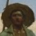
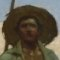

Te encuentras durmiendo, cuando de repente escuchas ruido a metal golpear el suelo.
Al abrir los ojos, delante de ti, un Orco mirándote fijamente, su mirada se cruza con la tuya y sus labios gotean
sed de sangre, mientras observas como se relame el labio su puño se cierra y se lanza sobre ti con un frénesi implacable
Recuerdas tus años de entrenamiento, y te preparas para el combate
Ha sido una lucha intensa, ese maldito Orco te agarró desprevenido... Eres fuerte y hábil, pero te sientes cansado, y dolorido.
Te preguntas donde estás...
Comienzas a caminar, y luego de unos minutos, a lo lejos, te encuentras con una pequeña cabaña.
Tiene las luces prendidas, ¿estará inhabitada? ... Te acercas de a poco, y escuchas un grito a lo lejos!
Volteas rapidamente y ves un goblin esconderse entre los arboles.
Te sientes muy herido como para ir a socorrer a quien esté gritando. Entras en la cabaña en busca de refugio
Levantas la mirada, y te sientes maravillado por lo que ves, una biblioteca
enorme, y muchas pociones... ¿vivirá alguien aquí?
La curiosidad te gana y empiezas a hurgar entre las pociones, no encuentras nada de utilidad...
Sigues buscando, y encuentras unas vendas... Debes curarte
Comienzas a vendarte y escuchas nuevamente gritos, esta vez, con claridad! Es una mujer pidiendo socorro
Comienzas a vendarte los brazos, son varios los cortes que te quedaron luego de la batalla que tuviste.
Luego de unos minutos te sientes mejor... Te curaste 15 de vida
Ves que hay varias pociones sobre un estante, pero no te atreves a tocarlas, no sabes que podria pasar...
Intentas leer algunos libros, pero el idioma lo desconoces...
Te das cuenta que ya no se escuchan los gritos, decides ir a explorar a donde viste el Goblin por ultima vez
VIDA +15
VIDA +15
DECIDISTE AYUDAR A LA PERSONA....
Te acercas lentamente a los arbustos en donde viste al Goblin por ultima vez. Sacas tu arma, rompes algunas ramas y logras pasar.
Sigues para adelante, y un Goblin se acerca corriendo a ti!
El te mira, y sabe que has luchado hace poco, es mas pequeño, pero no te tiene miedo.
Te das cuenta que cuelga de su boca ropa ensangrentada...
Has llegado tarde!... Por un momento piensas...
¿Realmente necesitaba curarme?


 
